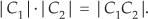
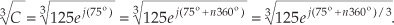
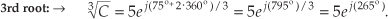
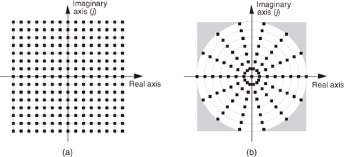

A The Arithmetic of Complex Numbers
To understand digital signal processing, we have to get comfortable using complex numbers. The first step toward this goal is learning to manipulate complex numbers arithmetically. Fortunately, we can take advantage of our knowledge of real numbers to make this job easier. Although the physical significance of complex numbers is discussed in Chapter 8, the following discussion provides the arithmetic rules governing complex numbers.
A.1 Graphical Representation of Real and Complex Numbers
To get started, real numbers are those positive or negative numbers we’re used to thinking about in our daily lives. Examples of real numbers are 0.3, –2.2, 5.1, etc. Keeping this in mind, we see how a real number can be represented by a point on a one-dimensional axis, called the real axis, as shown in Figure A-1.
Figure A-1 The representation of a real number as a point on the one-dimensional real axis.
We can, in fact, consider that all real numbers correspond to all of the points on the real axis line on a one-to-one basis.
A complex number, unlike a real number, has two parts: a real part and an imaginary part. Just as a real number can be considered to be a point on the one-dimensional real axis, a complex number can be treated as a point on a complex plane as shown in Figure A-2. We’ll use this geometrical concept to help us understand the arithmetic of complex numbers.†
† The complex plane representation of a complex number is sometimes called an Argand diagram—named after the French mathematician Jean Robert Argand (1768–1825).
Figure A-2 The phasor representation of the complex number C = R + jI on the complex plane.
A.2 Arithmetic Representation of Complex Numbers
A complex number C is represented in a number of different ways in the literature, such as
Equations (A-1″) and (A-1′′′) remind us that the complex number C can also be considered the tip of a phasor on the complex plane, with magnitude M, in the direction of ø degrees relative to the positive real axis as shown in Figure A-2. (We’ll avoid calling phasor M a vector because the term vector means different things in different contexts. In linear algebra, vector is the term used to signify a one-dimensional matrix. On the other hand, in mechanical engineering and field theory, vectors are used to signify magnitudes and directions, but there are vector operations (scalar or dot product, and vector or cross-product) that don’t apply to our definition of a phasor. The relationships between the variables in this figure follow the standard trigonometry of right triangles. Keep in mind that C is a complex number, and the variables R, I, M, and ø are all real numbers. The magnitude of C, sometimes called the modulus of C, is
and, by definition, the phase angle, or argument, of C is the arctangent of I/R, or
The variable ø in Eq. (A-3) is a general angle term. It can have dimensions of degrees or radians. Of course, we can convert back and forth between degrees and radians using π radians = 180°. So, if ør is in radians and ød is in degrees, then we can convert ør to degrees by the expression
Likewise, we can convert ød to radians by the expression
The exponential form of a complex number has an interesting characteristic that we need to keep in mind. Whereas only a single expression in rectangular form can describe a single complex number, an infinite number of exponential expressions can describe a single complex number; that is, while, in the exponential form, a complex number C can be represented by C= Mejø, it can also be represented by

where n = ±1, ±2, ±3, . . . and ø is in radians. When ø is in degrees, Eq. (A-6) is in the form
Equations (A-6) and (A-7) are almost self-explanatory. They indicate that the point on the complex plane represented by the tip of the phasor C remains unchanged if we rotate the phasor some integral multiple of 2π radians or an integral multiple of 360°. So, for example, if C = Mej(20°), then
The variable ø, the angle of the phasor in Figure A-2, need not be constant. We’ll often encounter expressions containing a complex sinusoid that takes the form
Equation (A-9) represents a phasor of magnitude M whose angle in Figure A-2 is increasing linearly with time at a rate of ω radians each second. If ω = 2π, the phasor described by Eq. (A-9) is rotating counterclockwise at a rate of 2π radians per second—one revolution per second—and that’s why ω is called the radian frequency. In terms of frequency, Eq. (A-9)’s phasor is rotating counterclockwise at ω = 2πf radians per second, where f is the cyclic frequency in cycles per second (Hz). If the cyclic frequency is f = 10 Hz, the phasor is rotating at 20π radians per second. Likewise, the expression

represents a phasor of magnitude M that rotates in a clockwise direction about the origin of the complex plane at a negative radian frequency of –ω radians per second.
A.3 Arithmetic Operations of Complex Numbers
A.3.1 Addition and Subtraction of Complex Numbers
Which of the above forms for C in Eq. (A-1) is the best to use? It depends on the arithmetic operation we want to perform. For example, if we’re adding two complex numbers, the rectangular form in Eq. (A-1) is the easiest to use. The addition of two complex numbers, C1 = R1 + jI1 and C2 = R2 + jI2, is merely the sum of the real parts plus j times the sum of the imaginary parts as
Figure A-3 is a graphical depiction of the sum of two complex numbers using the concept of phasors. Here the sum phasor C1 + C2 in Figure A-3(a) is the new phasor from the beginning of phasor C1 to the end of phasor C2 in Figure A-3(b). Remember, the Rs and the Is can be either positive or negative numbers. Subtracting one complex number from the other is straightforward as long as we find the differences between the two real parts and the two imaginary parts separately. Thus
Figure A-3 Geometrical representation of the sum of two complex numbers.

An example of complex number addition is discussed in Section 11.3, where we covered the topic of averaging fast Fourier transform outputs.
A.3.2 Multiplication of Complex Numbers
We can use the rectangular form to multiply two complex numbers as
However, if we represent the two complex numbers in exponential form, their product takes the simpler form

because multiplication results in the addition of the exponents. Of some interest is the fact that the product of the magnitudes of two complex numbers is equal to the magnitude of their product. That is,

As a special case of multiplication of two complex numbers, scaling is multiplying a complex number by another complex number whose imaginary part is zero. We can use the rectangular or exponential forms with equal ease as follows:
or in exponential form,
A.3.3 Conjugation of a Complex Number
The complex conjugate of a complex number is obtained merely by changing the sign of the number’s imaginary part. So, if we denote C* as the complex conjugate of the number C = R + jI = Mejø, then C* is expressed as
There are three characteristics of conjugates that occasionally come in handy. First, the conjugate of a product is equal to the product of the conjugates. That is, if C = C1C2, then from Eq. (A-13)
Second, the sum of conjugates of two complex numbers is equal to the conjugate of the sum. We can show this in rectangular form as
Third, the product of a complex number and its conjugate is the complex number’s magnitude squared. It’s easy to prove this in exponential form as
(This property is often used in digital signal processing to determine the relative power of a complex sinusoidal phasor represented by Mejωt.)
A.3.4 Division of Complex Numbers
The division of two complex numbers is also convenient using the exponential and magnitude and angle forms, such as
and
Although not nearly so handy, we can perform complex division in rectangular notation by multiplying the numerator and the denominator by the complex conjugate of the denominator as
A.3.5 Inverse of a Complex Number
A special form of division is the inverse, or reciprocal, of a complex number. If C = Mejø, its inverse is given by
In rectangular form, the inverse of C = R + jI is given by
We obtain Eq. (A-22) by substituting R1 = 1, I1 = 0, R2 = R, and I2 = I in Eq. (A-20).
A.3.6 Complex Numbers Raised to a Power
Raising a complex number to some power is easily done in the exponential form. If C = Mejø, then
For example, if C = 3ej125°, then C cubed is
We conclude this appendix with four complex arithmetic operations that are not very common in digital signal processing—but you may need them sometime.
A.3.7 Roots of a Complex Number
The kth root of a complex number C is the number that, multiplied by itself k times, results in C. The exponential form of C is the best way to explore this process. When a complex number is represented by C = Mejø, remember that it can also be represented by
In this case, the variable ø in Eq. (A-25) is in degrees. There are k distinct roots when we’re finding the kth root of C. By “distinct,” we mean roots whose exponents are less than 360°. We find those roots by using the following:

Next, we assign the values 0, 1, 2, 3, . . ., k–1 to n in Eq. (A-26) to get the k roots of C. OK, we need an example here! Let’s say we’re looking for the cube (third) root of C = 125ej(75°). We proceed as follows:

Next we assign the values n = 0, n = 1, and n = 2 to Eq. (A-27) to get the three roots of C. So the three distinct roots are
and

A.3.8 Natural Logarithms of a Complex Number
Taking the natural logarithm of a complex number C = Mejø is straightforward using exponential notation; that is,
where 0 ≤ ø < 2π. By way of example, if C = 12ejπ/4, the natural logarithm of C is
This means that e(2.485 + j0.785) = e2.485 · ej0.785 = 12ejπ/4.
Before leaving this topic of the natural logarithm of complex numbers, we remind the reader that ejπ = –1, which allows us to write
showing how the natural logarithm of a negative real number is defined.
As an interesting aside, rearranging the ejπ = –1 expression enables us to write what many mathematicians call “the most beautiful formula in mathematics.” That equation is
Equation (A-31) is famous because the natural constants e, π, 0, and 1, along with the fundamental operations of addition, multiplication, exponentiation, the “j” operator, and equality, all appear exactly once!
A.3.9 Logarithm to the Base 10 of a Complex Number
We can calculate the base 10 logarithm of the complex number C = Mejø using
† For the second term of the result in Eq. (A-32) we used loga(xn) = n·logax according to the law of logarithms.
Of course e is the irrational number, approximately equal to 2.71828, whose log to the base 10 is approximately 0.43429. Keeping this in mind, we can simplify Eq. (A-32) as
Repeating the above example with C = 12ejπ/4 and using the Eq. (A-32′) approximation, the base 10 logarithm of C is

The result from Eq. (A-33) means that
A.3.10 Log to the Base 10 of a Complex Number Using Natural Logarithms
Unfortunately, some software mathematics packages have no base 10 logarithmic function and can calculate only natural logarithms. In this situation, we just use
to calculate the base 10 logarithm of x. Using this change of base formula, we can find the base 10 logarithm of a complex number C = Mejø; that is,
Because log10(e) is approximately equal to 0.43429, we use Eq. (A-35) to state that
Repeating, again, the example above of C = 12ejπ/4, the Eq. (A-36) approximation allows us to take the base 10 logarithm of C using natural logs as
giving us the same result as Eq. (A-32).
A.4 Some Practical Implications of Using Complex Numbers
At the beginning of Section A.3, we said that the choice of using the rectangular versus the polar form of representing complex numbers depends on the type of arithmetic operations we intend to perform. It’s interesting to note that the rectangular form has a practical advantage over the polar form when we consider how numbers are represented in a computer. For example, let’s say we must represent our complex numbers using a four-bit sign-magnitude binary number format. This means that we can have integral numbers ranging from –7 to +7, and our range of complex numbers covers a square on the complex plane as shown in Figure A-4(a) when we use the rectangular form. On the other hand, if we used four-bit numbers to represent the magnitude of a complex number in polar form, those numbers must reside on or within a circle whose radius is 7 as shown in Figure A-4(b). Notice how the four shaded corners in Figure A-4(b) represent locations of valid complex values using the rectangular form but are out of bounds if we use the polar form. Put another way, a complex number calculation, yielding an acceptable result in rectangular form, could result in an overflow error if we use polar notation in our computer. We could accommodate the complex value 7 + j7 in rectangular form but not its polar equivalent, because the magnitude of that polar number is greater than 7.
Figure A-4 Complex integral numbers represented as points on the complex plane using a four-bit sign-magnitude data format: (a) using rectangular notation; (b) using polar notation.

Although we avoid any further discussion here of the practical implications of performing complex arithmetic using standard digital data formats, it is an intricate and interesting subject. To explore this topic further, the inquisitive reader is encouraged to start with the references.
References
[1] Plauger, P. J. “Complex Math Functions,” Embedded Systems Programming, August 1994.
[2] Kahan, W. “Branch Cuts for Complex Elementary Functions, or Much Ado About Nothing’s Sign Bit,” Proceedings of the Joint IMA/SIAM Conference on the State of the Art in Numerical Analysis, Clarendon Press, 1987.
[3] Plauger, P. J. “Complex Made Simple,” Embedded Systems Programming, July 1994.